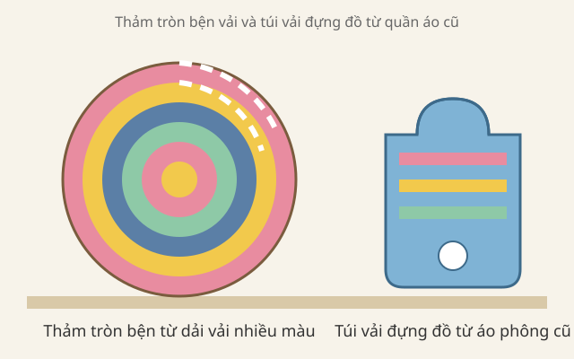

Tận dụng quần áo cũ làm thảm chùi chân và túi vải đựng đồ
Tác giả: Ruler
Tủ quần áo của nhiều gia đình đều có một ngăn đồ không mặc nữa: áo phông đã bạc màu, quần jean rách gối, ga trải giường cũ, khăn tắm đã mỏng. Đồ còn nguyên nhưng không ai mặc, bỏ đi thì tiếc, giữ lại thì chật tủ. Bài viết này chọn một hướng xử lý cho ngăn tủ đó: biến quần áo cũ thành thảm chùi chân và túi vải đựng đồ đi chợ hoặc đựng đồ lặt vặt trong nhà. Phạm vi của bài dừng ở hai món đồ vải này — chuyện chăm cây trong nhà hay cắm một bình hoa tươi không nằm trong bài.
Chọn quần áo cũ nào dùng được, loại nào nên bỏ
Không phải món quần áo cũ nào cũng hợp để làm thảm hay túi. Bạn nên trải tất cả đồ cũ định dùng ra sàn, rồi chia thành ba nhóm: dùng được, dùng được một phần, và bỏ. Cách chia này giúp bạn khỏi mất công cắt một món vải rồi mới phát hiện ra nó không bện được.
Nhóm dùng được là quần áo bằng vải cotton, vải thô và vải denim còn dày dặn. Áo phông cotton cũ là lựa chọn dễ làm nhất, vì vải thun co giãn nhẹ, khi cắt thành dải rồi kéo nhẹ thì mép vải tự cuộn lại thành sợi tròn. Vải cotton thấm nước tốt, nên hợp làm thảm chùi chân đặt trước cửa phòng tắm. Vải denim từ quần jean cũ dày và chắc hơn, hợp làm thảm đặt ở cửa ra vào và hợp làm túi đựng đồ nặng hơn như sách hay chai lọ.
Nhóm dùng được một phần là quần áo có chỗ hỏng nhưng vẫn còn mảng vải lành. Áo phông rách ở nách vẫn dùng được phần thân áo; quần jean rách gối vẫn dùng được phần ống quần; ga trải giường sờn ở mép vẫn dùng được phần giữa. Với nhóm này, bạn cắt bỏ phần hỏng trước, chỉ giữ lại phần vải còn lành. Bạn cũng có thể tận dụng tay áo và ống quần làm quai túi, vì hai phần này vốn đã là ống vải dài.
Nhóm nên bỏ là quần áo đã mục, vải rách thành nhiều lỗ nhỏ, vải bở ra khi bạn kéo nhẹ, vải có mùi ẩm mốc nặng dù đã giặt, và quần áo dính hóa chất mà bạn không biết là chất gì. Vải đã mục thì bện xong cũng sẽ đứt khi bạn giẫm lên hoặc khi bạn giặt thảm. Bạn cũng nên bỏ quần áo lót cũ và quần áo dính vết bẩn không rõ nguồn gốc, vì hai loại này không hợp để làm đồ dùng chung trong nhà.
| Loại vải | Hợp làm gì | Vì sao |
|---|---|---|
| Áo phông cotton cũ | Thảm tròn, thảm chữ nhật, túi không cần may | Mềm, thấm nước tốt, mép vải tự cuộn khi kéo |
| Vải thô, ga giường cũ | Thảm chữ nhật, túi may đơn giản | Bề mặt phẳng, ít co giãn, cắt thẳng dễ |
| Quần jean denim cũ | Thảm cửa ra vào, túi đựng đồ nặng | Dày, chắc, ít rách khi kéo căng |
| Áo len cũ | Chỉ làm thảm dày trong phòng ngủ | Ấm và êm, nhưng sợi len dễ xù và lâu khô |
| Vải voan, vải lụa mỏng | Không nên dùng | Quá mỏng, trơn, bện xong dễ tuột |
| Vải đã mục, vải mốc nặng | Bỏ | Bện xong dễ đứt, giặt xong vẫn có mùi |
Giặt và chuẩn bị vải trước khi cắt
Quần áo cũ phải được giặt sạch trước khi cắt, không phải sau khi làm xong mới giặt. Vải chưa giặt có thể còn bụi, mồ hôi và mùi cũ; khi bạn cắt và bện, bụi đó dính vào tay và vào các dải vải khác. Giặt trước cũng giúp bạn phát hiện vải nào đã mục: vải mục khi giặt xong sẽ rách thêm hoặc bở ra, và bạn sẽ loại nó ra trước khi mất công cắt.
Bạn nên giặt quần áo cũ bằng bột giặt thông thường, phơi khô hoàn toàn rồi mới cắt. Bạn không cần dùng nước xả vải cho bước này, vì nước xả làm vải trơn hơn và khó bện chặt.
Bạn nên cắt dải vải rộng khoảng 2–3 cm, dài khoảng 80–100 cm. Bạn nên dùng thước và phấn vẽ vải để kẻ đường cắt trước, rồi cắt theo đường đã kẻ, thay vì cắt ước chừng bằng mắt. Cắt càng đều thì thảm càng phẳng, cắt lệch thì thảm sẽ lồi lõm. Với áo phông, bạn có thể cắt bỏ phần gấu áo và phần cổ áo, chỉ giữ lại phần thân áo hình ống, rồi cắt xoắn ốc quanh ống vải đó để được một dải dài liên tục.
Khi dải vải đã cắt xong, bạn nên nối các dải ngắn lại thành dải dài trước khi bện. Cách nối không cần may là rạch một khe nhỏ ở đầu mỗi dải, luồn đầu dải này qua khe của dải kia rồi kéo chặt. Mối nối làm theo cách này nằm phẳng, không cộm lên như nút thắt, nên thảm bện xong sẽ phẳng hơn. Sau khi nối xong, bạn cuộn mỗi màu vải thành một cuộn tròn riêng, để khi bện bạn chỉ cần kéo cuộn vải lăn trên sàn, khỏi phải gỡ rối.
Thảm chùi chân bện vải
Thảm tròn là kiểu thảm dễ hình dung nhất cho người mới làm lần đầu: bạn bện một sợi dây vải dài, rồi cuộn sợi dây đó thành hình xoắn ốc từ tâm ra ngoài, khâu cố định từng vòng lại với nhau. Thảm tròn hợp đặt trước cửa phòng tắm, cạnh giường ngủ hoặc trước bồn rửa mặt, nơi chỉ cần một tấm thảm vừa với một người đứng.
Bạn lấy ba dải vải dài đã nối sẵn, mỗi dải một màu, buộc chặt ba đầu dải lại với nhau thành một nút. Bạn nên đè nút buộc xuống bằng một vật nặng, hoặc kẹp nút vào mép bàn, để hai tay bạn rảnh mà bện. Bạn bện ba dải vải như tết bím tóc: dải phải vắt qua dải giữa, rồi dải trái vắt qua dải giữa mới, cứ lặp lại như vậy. Bạn nên giữ lực tay đều, không bện quá chặt cũng không bện quá lỏng. Bện quá chặt thì sợi dây vải cứng lại và thảm sẽ cong lên; bện quá lỏng thì sợi dây dễ bung khi bạn giẫm lên.
Khi sợi dây vải đã đủ dài, bạn đặt đầu sợi dây lên mặt sàn phẳng, cuộn nó thành một vòng tròn nhỏ ở giữa, rồi tiếp tục cuộn vòng sau ôm sát vòng trước, đi dần ra ngoài như hình xoắn ốc. Bạn nên nhớ một nguyên tắc: luôn để thảm nằm phẳng trên sàn trong lúc khâu, đừng cầm thảm lên khâu trên đùi. Khi bạn cầm thảm lên, các vòng vải sẽ xô lệch, và khi đặt xuống thảm sẽ cong lên như lòng bát. Bạn nên khâu cố định từng vòng ngay sau khi cuộn, dùng kim khâu tay to và chỉ chắc, luồn kim ngang qua mép của hai vòng vải kề nhau.
Ở những vòng ngoài cùng, bạn cần chừa thêm một chút độ dài cho vòng ngoài so với vòng trong, vì vòng ngoài dài hơn vòng trong. Nếu bạn kéo vòng ngoài căng quá, thảm sẽ co lại và cong lên ở giữa. Khi thảm đã đạt kích thước bạn muốn, bạn cắt đầu sợi dây vải còn thừa, giấu đầu dây xuống mặt dưới của thảm rồi khâu chặt lại.
Thảm chùi chân tết bím
Thảm chữ nhật làm theo cách khác: bạn tết nhiều sợi dây bím ngắn hơn, rồi xếp các sợi dây đó song song với nhau và khâu chúng lại thành một tấm thảm hình chữ nhật. Cách này hợp với người không quen cuộn xoắn ốc, và hợp với chỗ đặt hình chữ nhật như trước cửa ra vào, trước bồn rửa bát hoặc dọc theo lối đi trong bếp.
Bạn cắt nhiều dải vải dài khoảng 80–100 cm, rộng khoảng 2–3 cm. Bạn lấy ba dải vải làm một nhóm, tết thành một sợi dây bím dài, rồi cố định hai đầu sợi dây bằng băng dính hoặc khâu tạm một mũi chỉ, để sợi dây không bung ra trong lúc bạn làm sợi tiếp theo. Bạn làm lần lượt như vậy cho tới khi có đủ sợi dây bím để xếp thành tấm thảm.
Bạn trải một tấm vải cũ lành lặn làm đế thảm lên mặt phẳng, xếp các sợi dây bím song song lên trên cho các sợi nằm sát nhau, rồi khâu cố định chúng vào tấm vải đế. Bạn nên khâu dọc theo từng khe giữa hai sợi dây, khâu từng đoạn ngắn rồi mới khâu đoạn tiếp theo, thay vì khâu một đường dài xuyên suốt tấm thảm. Khâu từng đoạn ngắn giúp bạn kiểm soát được độ phẳng của thảm, và nếu một đoạn bị lệch thì bạn chỉ cần tháo đoạn đó ra khâu lại. Nếu bạn thích thảm có tua rua, bạn chỉ cần chừa lại một đoạn vải chưa tết ở hai đầu mỗi sợi dây bím.
Bạn nên đo chiều rộng cửa trước rồi mới cắt vải. Thảm đặt trước cửa ra vào nên làm theo kích thước tham khảo thường gặp là 50 cm chiều rộng và 80 cm chiều dài, hoặc 60 cm chiều rộng và 90 cm chiều dài nếu cửa nhà bạn rộng. Thảm rộng hơn cửa sẽ bị vướng khi mở cửa, còn thảm hẹp hơn cửa quá nhiều thì chân bạn sẽ bước hụt ra ngoài thảm.
Mặt dưới chống trượt
Cả thảm tròn và thảm chữ nhật đều có chung một rủi ro: mặt dưới bằng vải trơn rất dễ trượt trên sàn gạch, sàn gỗ hoặc sàn nhựa, nhất là khi sàn còn ướt sau khi tắm. Bạn bước lên thảm, thảm trượt đi, bạn có thể ngã. Vì vậy, bạn nên làm mặt dưới chống trượt cho thảm chùi chân, dù bạn làm thảm theo cách nào.
Cách đơn giản nhất là khâu một tấm lưới chống trượt vào mặt dưới của thảm. Bạn cắt lưới theo đúng kích thước thảm rồi khâu cố định vào bốn góc và vài điểm ở giữa. Nếu bạn không mua được lưới chống trượt, bạn có thể dùng một tấm vải bố dày làm đế thảm, vì vải bố ráp hơn vải cotton trơn và bám sàn tốt hơn.
Túi vải đựng đồ
Túi vải là món thứ hai trong bài, và là món dễ làm hơn thảm rất nhiều. Bạn chỉ cần một chiếc áo phông cũ, một chiếc kéo sắc và khoảng nửa giờ rảnh — thời gian này chỉ là ước chừng cho người mới làm lần đầu, chưa đo thực tế từng món. Túi vải từ áo phông hợp đựng đồ đi chợ nhẹ, đựng đồ lặt vặt trong nhà, đựng đồ giặt hoặc đựng sách vở. Bạn không nên dùng túi vải từ áo phông để đựng đồ quá nặng hoặc đồ sắc nhọn, vì vải thun sẽ giãn ra và có thể rách.
Túi không cần may: cắt và thắt nút
Túi không cần may là cách làm nhanh nhất, hợp với người chưa biết may. Bạn trải áo phông lên mặt phẳng, vuốt cho áo phẳng, rồi cắt bỏ hai tay áo theo đường may nối tay áo với thân áo. Bạn cắt cổ áo thành hình chữ U rộng, để tạo thành miệng túi và hai quai túi ở hai bên vai áo. Bạn nên cắt cổ áo vừa phải: cắt quá sâu thì miệng túi rộng, đồ đựng bên trong dễ rơi ra; cắt quá nông thì tay bạn khó cho đồ vào túi.
Sau khi cắt xong phần trên, bạn xử lý phần đáy túi. Bạn cắt phần gấu áo theo chiều ngang thành nhiều dải nhỏ, mỗi dải rộng khoảng 2–3 cm và cao khoảng 5 cm, cắt xuyên qua cả hai lớp vải trước và sau của áo. Bạn lấy một dải ở mặt trước và một dải ở mặt sau tương ứng, thắt chặt hai dải đó lại với nhau bằng nút thắt đôi. Bạn thắt lần lượt từ đầu này sang đầu kia của đáy túi, cho tới khi tất cả các dải đều đã thắt xong.
Sau khi thắt xong lượt đầu, bạn sẽ thấy giữa hai nút thắt kề nhau còn một khe hở nhỏ, đồ nhỏ có thể rơi qua khe đó. Bạn nên thắt thêm lượt nút thứ hai: lấy một dải vải từ nút thắt bên trái và một dải vải từ nút thắt bên phải, thắt hai dải đó lại với nhau, rồi lặp lại cho tới hết đáy túi. Lượt thắt thứ hai này làm đáy túi kín hơn. Bạn nên lộn áo từ mặt phải ra mặt trái trước khi thắt nút, để các nút thắt nằm ở mặt trong của túi. Sau khi thắt xong cả hai lượt nút, bạn lộn túi lại mặt phải ra ngoài rồi mới dùng — lúc này mặt ngoài của túi phẳng, các nút thắt đã giấu vào mặt trong.
Túi may đơn giản: hai mảnh vải và hai quai
Túi may đơn giản hợp với vải thô, vải denim hoặc vải ga giường cũ, là những loại vải ít co giãn và khó thắt nút như vải thun. Bạn cắt hai mảnh vải hình chữ nhật bằng nhau làm thân túi, và hai dải vải dài làm quai túi. Bạn đặt hai mảnh thân túi úp mặt phải vào nhau, may ba cạnh — hai cạnh bên và cạnh đáy — lại với nhau, chừa lại miệng túi ở phía trên. Bạn nên may hai đường chỉ song song ở cạnh đáy, vì đáy túi là nơi chịu lực nặng nhất khi bạn đựng đồ.
Sau khi may xong thân túi, bạn lộn mặt phải của túi ra ngoài, rồi may hai quai túi vào hai bên miệng túi. Quai túi nên làm từ vải denim hoặc vải thô dày, vì quai túi chịu toàn bộ trọng lượng của đồ đựng bên trong. Bạn nên may quai túi bằng nhiều đường chỉ chồng lên nhau, và may quai túi vào mặt trong của miệng túi rồi gấp mép miệng túi xuống, để đường may quai túi được giấu đi.
Giặt và bảo quản đồ vải tái chế
Thảm chùi chân tiếp xúc trực tiếp với chân ướt và bụi bẩn, nên bạn nên giặt thảm thường xuyên hơn túi vải. Theo cách làm chung trong bài này, bạn giặt thảm bằng tay hoặc giặt máy ở chế độ nhẹ, dùng bột giặt thông thường, và phơi thảm ở nơi thoáng gió, có nắng nhẹ. Các nguồn trong bài chỉ hướng dẫn giặt sạch vải trước khi tái chế, còn cách giặt thảm sau khi làm xong là hướng dẫn chung của bài, chưa đối chiếu nguồn ngoài.
Túi vải thì giặt khác thảm, vì túi nhẹ và mỏng hơn. Với túi thắt nút, bạn nên giặt tay: lộn túi ra mặt trái, ngâm trong chậu nước ấm khoảng 30°C pha bột giặt nhẹ trong 15 đến 20 phút, chà nhẹ đáy túi và quai túi bằng bàn chải mềm, xả sạch rồi vắt nhẹ tay, không vắt xoắn. Túi thắt nút thì bạn đừng giặt máy, vì lồng máy vắt mạnh có thể làm các nút thắt ở đáy túi lỏng ra — đây là lưu ý theo cách làm của bài này, vì nút thắt không phải đường may. Với túi may, bạn có thể giặt máy khi đường may còn chắc: cho túi vào túi lưới giặt, chọn chế độ nhẹ, nước không quá 30°C, tốc độ vắt thấp. Sau khi giặt, bạn lấy túi ra ngay, nhồi giấy báo vào trong túi để giữ form rồi phơi ở nơi thoáng mát, tránh nắng gắt kéo dài vì nắng làm vải phai màu. Cách giặt túi trong đoạn này theo hướng dẫn giặt túi tote của MIA.vn (nguồn số 5).
Khi không dùng, bạn treo túi lên móc và cuộn thảm cất vào chỗ thoáng, tránh để sát tường ẩm, và khâu lại ngay khi thấy đường khâu rách.
Kết luận
Một ngăn tủ đồ cũ, qua một buổi chiều cắt và bện, có thể thành tấm thảm đặt ngay trước cửa phòng tắm và chiếc túi mang đi chợ mỗi ngày. Cả hai món đều làm từ vải bạn đã có sẵn, nên nếu chỗ nào sờn hay rách sau một thời gian dùng, bạn biết ngay đó là vải gì và sửa lại bằng chính dải vải còn thừa.
Nguồn tham khảo
- bTaskee, "Làm Thảm Lau Chân Từ Quần Áo Cũ Đơn Giản, Tiết Kiệm" — dùng cho các khẳng định: chọn vải cotton hoặc vải thô vì thấm nước tốt, tránh vải trắng vì dễ lộ vết bẩn; kích thước thảm phổ biến 50x30 cm, thảm nhà tắm 40x80 cm, thảm ở vị trí khác 50x80 cm hoặc 60x90 cm; cắt vải thành dải dài 80–100 cm, rộng 2–3 cm; bện ba dải vải như tết bím tóc; dùng một tấm vải làm nền và khâu lại để tăng độ chắc chắn (truy cập 23/11/2026): https://www.btaskee.com/kinh-nghiem-hay/lam-tham-lau-chan-tu-quan-ao-cu/
- Giảm Rác Nhựa, "Tái Chế Vải Vụn: Biến 'Đồ Bỏ Đi' Thành Vật Dụng Hữu Ích Cho Ngôi Nhà Bạn" (đăng 02/09/2025) — dùng cho các khẳng định: vải cotton, denim, lanh, nỉ và polyester đều có thể tái chế; cotton và lanh mềm, thấm hút tốt, hợp làm túi vải; denim bền, hợp làm thảm và túi xách lớn; giặt sạch, phơi khô và ủi phẳng vải trước khi tái chế; cắt vải thành dải rộng khoảng 2–3 cm; cuộn tròn sợi dây vải đã bện thành hình xoắn ốc từ tâm ra ngoài hoặc xếp song song, khâu cố định từng vòng hoặc từng hàng; khâu đế chống trượt vào mặt dưới thảm; làm túi vải bằng hai mảnh thân hình chữ nhật và hai dải quai, may các cạnh bên và cạnh đáy, chừa miệng túi (truy cập 23/11/2026): https://giamracnhua.vn/tai-che/diy/cach-tai-che-vai-vun/
- Homesteading.com, "Rag Rug | How To Make a Rug: 10 Fun and Creative Ways to Make Rag Rugs" (cập nhật tháng 02/2026) — dùng cho các khẳng định: vải cotton hợp làm thảm vì bền, dẻo và dễ cắt thành dải; áo phông cũ, ga trải giường và quần áo đã mòn là lựa chọn thường gặp; cắt phần thân áo phông thành ống vải rồi cắt xoắn ốc thành một dải dài liên tục; nối hai dải vải bằng cách rạch khe nhỏ ở đầu mỗi dải, luồn đầu dải này qua khe của dải kia rồi kéo chặt, mối nối nằm phẳng; cuộn vải thành cuộn tròn riêng theo màu trước khi bện; bện ba màu với lực tay đều, không quá chặt cũng không quá lỏng; bắt đầu cuộn thảm hình bầu dục bằng một đoạn thẳng ở giữa rồi cuộn vòng sau ôm sát vòng trước; chừa thêm độ dài cho vòng ngoài ở chỗ cong để thảm không cong lên như lòng bát; luôn giữ thảm phẳng trên sàn trong lúc khâu, ấn phẳng sau mỗi đoạn khâu (truy cập 23/11/2026): https://homesteading.com/make-a-rag-rug-homesteading-tutorial/
- Fairfax County (Mỹ), "Upcycled T-Shirt Tote Bag" — tài liệu hoạt động cộng đồng — dùng cho các khẳng định: làm túi từ áo phông dệt kim không cần may; cắt bỏ tay áo, cắt cổ áo thành hình chữ U; cắt phần đáy áo thành dải rộng khoảng 1 inch (khoảng 2,5 cm) và cao khoảng 2 inch (khoảng 5 cm), cắt xuyên qua cả hai lớp vải trước và sau; thắt dải mặt trước với dải mặt sau tương ứng; thắt lượt nút thứ hai bằng cách lấy một dải từ nút thắt hai bên để bịt kín khe hở giữa các nút; lộn túi từ trong ra ngoài để nút thắt nằm ở mặt trong (truy cập 23/11/2026): https://www.fairfaxcounty.gov/neighborhood-community-services/sites/neighborhood-community-services/files/Assets/Documents/NCS Connects/Summer Wk4/Teen_T-shirt Tote Bag.pdf
- MIA.vn, "Cách giặt túi tote đúng chuẩn để túi bền đẹp lâu hơn" (đăng 03/06/2026) — dùng cho các khẳng định: giặt tay là cách an toàn nhất cho mọi chất liệu vải; ngâm túi 15 đến 20 phút trong nước ấm khoảng 30°C pha bột giặt nhẹ; chà nhẹ bằng bàn chải mềm, tập trung vào đáy túi và quai túi; vắt nhẹ tay, không vắt xoắn; phơi ở nơi thoáng mát, tránh nắng trực tiếp kéo dài, nhồi giấy báo vào trong túi khi phơi để giữ form; giặt máy chỉ khi túi làm bằng vải dày và đường may còn chắc, cho vào túi lưới giặt, chế độ nhẹ, nước không quá 30°C, tốc độ vắt thấp 400 đến 600 vòng/phút (truy cập 23/11/2026): https://mia.vn/tin-tuc/cach-giat-tui-tote-dung-chuan-4118
Phương án ảnh

Đây là sơ đồ minh họa, không phải ảnh chụp thực hành